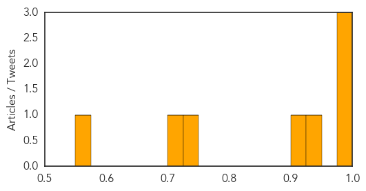
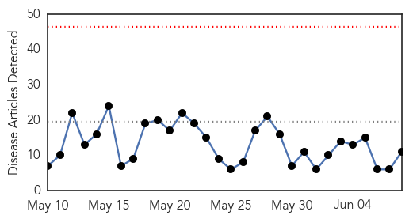
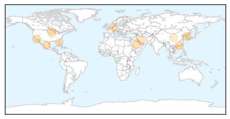

Dengue Fever
30-Day Web Trend
1 alerts, 1 warnings

30-Day Twitter Trend
0 alerts, 0 warnings

Article Locations

Article Confidences
Top Articles:
- 0.996
- SKN Monitoring MERS and ZIKA
- 0.985
- Mumbai: First showers arrive, so does the threat of dengue
- 0.985
- 586 people test positive for dengue in State
- 0.943
- Less dengue cases noted in WVisayas
- 0.916
- Private doctors roped in to keep monsoon diseases at bay
- 0.738
- Thai Burma Border – Dengue Fever Outbreak « Karen News
- 0.712
- The Deepening Humanitarian Crisis in Yemen
- 0.562
- IT Ministry preparing to win fight against dengue
Top Tweets:
- 0.536
- Flavivirus news: Combating dengue with infectious disease forecasting - Medical Xpress: Combati... http://t.co/AMF2O777sg pathogenposse
Influenza
30-Day Web Trend
0 alerts, 0 warnings

30-Day Twitter Trend
1 alerts, 0 warnings

Article Locations
Article Confidences

Top Articles:
- 0.998
- (Yonhap Interview) Trust, responsibility vital for MERS control: WHO chief
- 0.998
- (Yonhap Interview) Trust, responsibility vital for MERS control
- 0.991
- MERS deadly but most cases in hospital preventable, WHO says
- 0.987
- Viruses on a plane! How flu travels around the world
- 0.956
- New vaccines effective against H5N1, H7N9 avian influenza strains
- 0.780
- Training course on laboratory preparedness for emerging respiratory pathogens
- 0.751
- June 7, 2015 Archives
- 0.751
- June 7, 2015 Archives
- 0.682
- Five More Confirmed US Bird Flu Outbreaks
- 0.628
- Minnesota researchers race to decode secrets of deadly bird flu
- 0.592
- Bird flu cases appear to be dropping as clean up continues
Top Tweets:
- 0.565
- Read the latest report on influenza activity in the United States: http://t.co/WRMp5leGlk flu MMWR